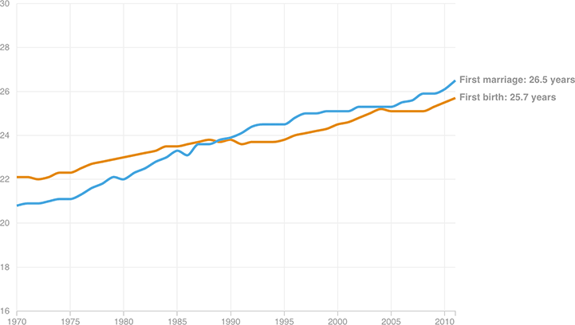

Marrying Later And Later, But Having Kids First
In the late 1980s, the median age at which women have their first kids fell below the median age of first marriage. Sociologists call this the “Great Crossover,” and these data make two trends abundantly clear: one, women are waiting longer and longer to marry and have children, and two, they’re not waiting to get married before they have those kids.
